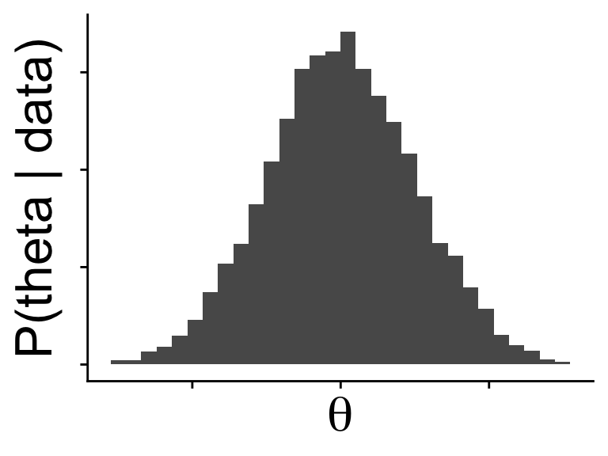
That’s the name of a whole course!
but here we go
We maximize
\[ \mathbb{P}(\text{data} \mid \text{model params}) \]
and that tells us what parameters best fit the data
“find the parameters that maximize the probability of the data given those parameters”
to understand uncertainty in parameter estimates we have to do a somewhat convoluted comparison to a \(\chi^2\) distribution
but likelihood is important, and it is a natural way to think about models because it flows from how data would be generated from a given model
It just might be easier to interpret if we could flip the conditional
\[ \mathbb{P}(\text{model params} \mid \text{data}) \]
we can read this as just “what is the probability of these parameters given the data?”
This probability has a special name in Bayesian statistics
\[ \mathbb{P}(\text{model params} \mid \text{data}) \]
it is the posterior
it automatically encodes information about uncertainty:
we can ask about the probability of any parameters, not just the most likely

and we are often most interested in this question: how likely is my model given the data.
To get there with the likelihood we have to use a null hypothesis test and ask “how likely is my model inference if the real model is null?”
but we can get the posterior from the likelihood! (with a little math)
This is Bayes’ Theorem, where Bayesian statistics gets its name
\[ \mathbb{P}(\theta \mid \text{data}) = \frac{\mathbb{P}(\text{data} \mid \theta) \mathbb{P}(\theta)}{\mathbb{P}(\text{data})} \]
the numerator is the likelihood times something new:
the prior \(\mathbb{P}(\theta)\)
the prior \(\mathbb{P}(\theta)\) represents our prior assumptions or knowledge about the value of the parameter(s) \(\theta\)
Most often we want a flat prior, one that tries to make as few assumptions as possible
That’s easy when our parameter is naturally bounded like the binomial \(p\)
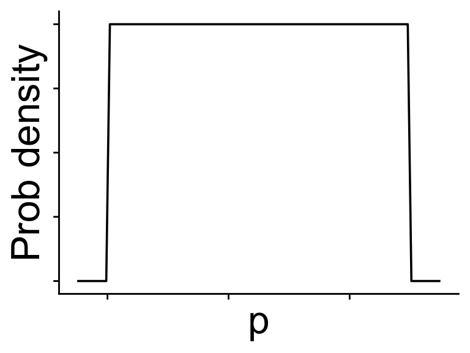
But more difficult with unbounded \((-\infty, \infty)\) parameters like a slope \(\beta\)
We do our best by making distributions as broad as possible like \(\mathcal{N}(\mu = 0, ~\sigma = 1,000)\), which is effectively flat
\[ \begin{aligned} \mathbb{P}(0 < \beta < 100) &= 0.0398278 \\ \mathbb{P}(100 < \beta < 200) &= 0.0394319 \end{aligned} \]
But if we had genuine information about a realistic range of parameter values, a prior allows us to use that
If the posterior is easier to interpret, why don’t we do Bayesian statistics more often?
\[ \mathbb{P}(\theta \mid \text{data}) = \frac{\mathbb{P}(\text{data} \mid \theta) \mathbb{P}(\theta)}{\mathbb{P}(\text{data})} \]
\(\mathbb{P}(\text{data})\) is the sum of \(\mathbb{P}(\text{data} \mid \theta)\) for all possible model parameterizations
\[ \mathbb{P}(\text{data} \mid \text{this } \theta) + \mathbb{P}(\text{data} \mid \text{that } \theta) + \cdots \]
but we can’t actually take a sum like this (it would be infinite) so formally
\[ \mathbb{P}(\text{data}) = \int_\theta \mathbb{P}(\text{data} \mid \theta) \]
This “sum”
\[ \mathbb{P}(\text{data}) = \int_\theta \mathbb{P}(\text{data} \mid \theta) \]
can be \(\leq 1\) (the data are not guaranteed under our model)
and outside of a few special cases it is impossible to calculate in closed form
but it is extremely important because without it the posterior \(\mathbb{P}(\theta \mid \text{data})\) is not a proper probability, it could be \(> 1\)
Even though we typically don’t know \(\mathbb{P}(\text{data})\) to normalize the posterior, we know the shape of the posterior
\(\mathbb{P}(\text{data} | \theta) \mathbb{P}(\theta)\) gives the shape
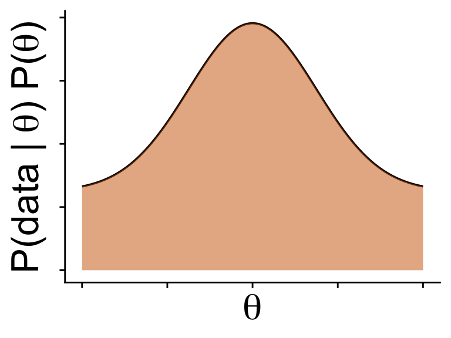
Use the shape of the posterior \(\mathbb{P}(\text{data} | \theta) \mathbb{P}(\theta)\) to draw a random sample consistent with the posterior
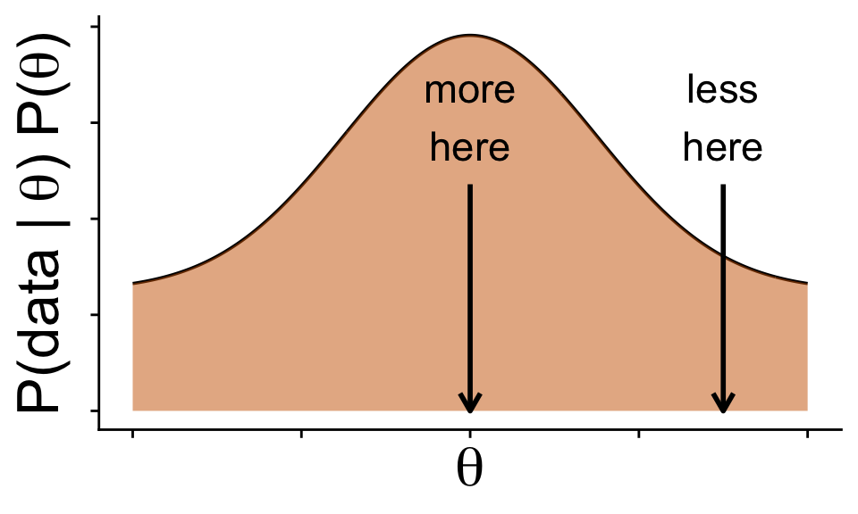
Use the shape of the posterior \(\mathbb{P}(\text{data} | \theta) \mathbb{P}(\theta)\) to draw a random sample consistent with the posterior
Sampling proportionately to \(\mathbb{P}(\text{data} | \theta) \mathbb{P}(\theta)\)
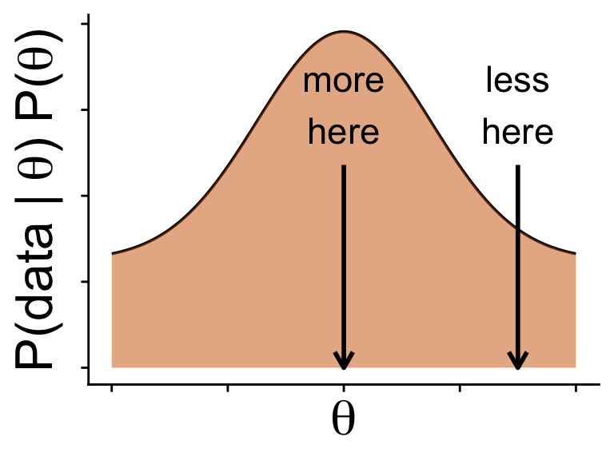
Yields a sample
of \(\theta\)
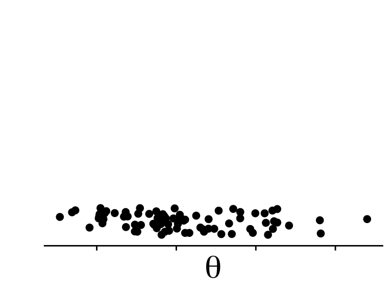
That looks like it came from \(\mathbb{P}(\theta \mid \text{data})\)
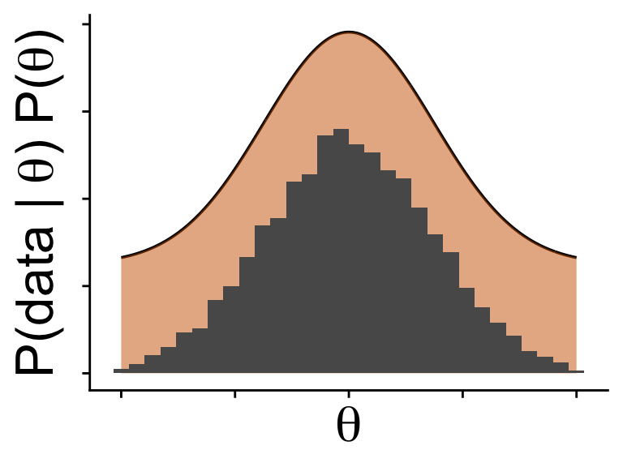
MCMC is the method of choice for this task
Start with an initial
value for \(\theta\)
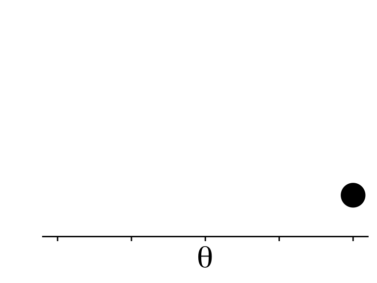
Somehow propose a new value using \(\mathbb{P}(\text{data} \mid \theta) \mathbb{P}(\theta)\)
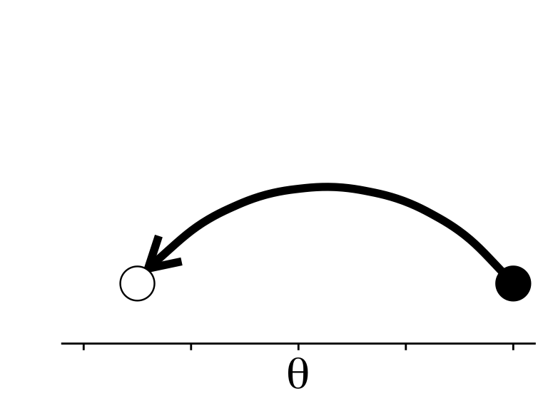
MCMC is the method of choice for this task
Repeat! with new value
of \(\theta\) as starting point
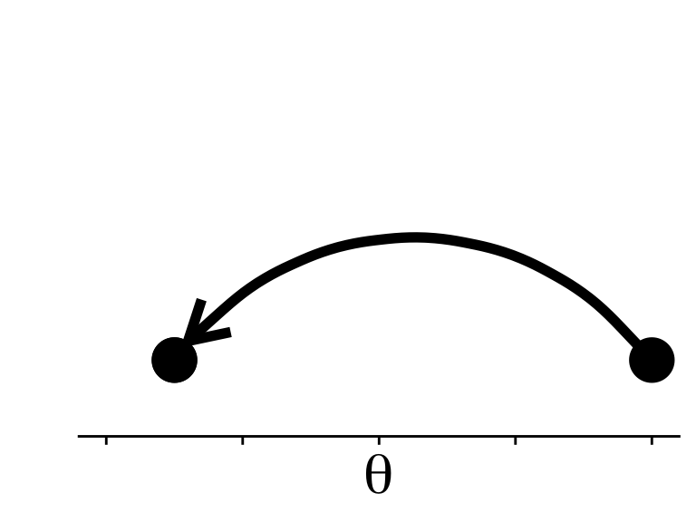
Somehow propose a new value using \(\mathbb{P}(\text{data} \mid \theta) \mathbb{P}(\theta)\)
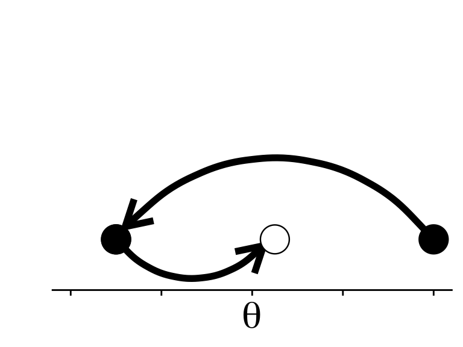
Do that enough and we get a sample from the posterior without ever knowing the equation for \(\mathbb{P}(\theta \mid \text{data})\)
MCMC is the method of choice for this task
Repeat! with new value
of \(\theta\) as starting point
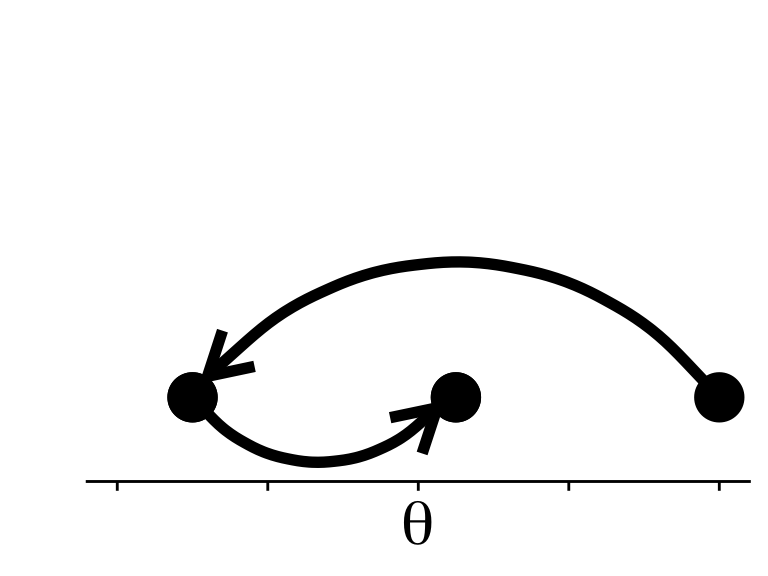
Do that enough and we get a sample from the posterior…
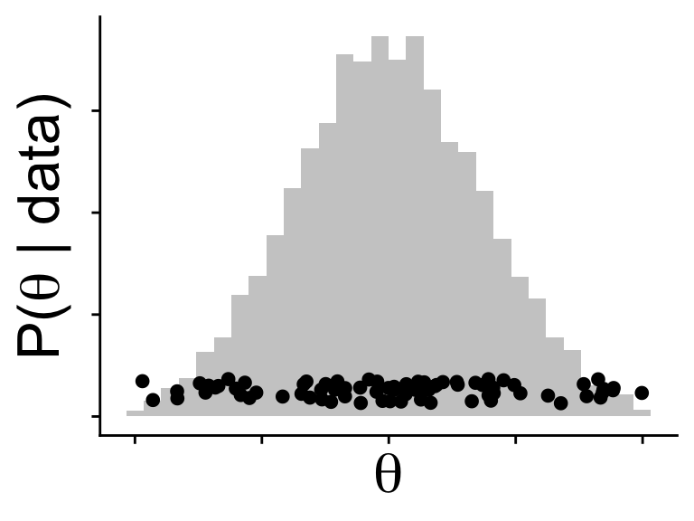
…without ever knowing the equation for \(\mathbb{P}(\theta \mid \text{data})\)
Common MCMC algorithms include
NUTS is what the software Stan uses, which is under the hood of the R code we’ll use
Imagine a kid kicking a ball in a hilly landscape
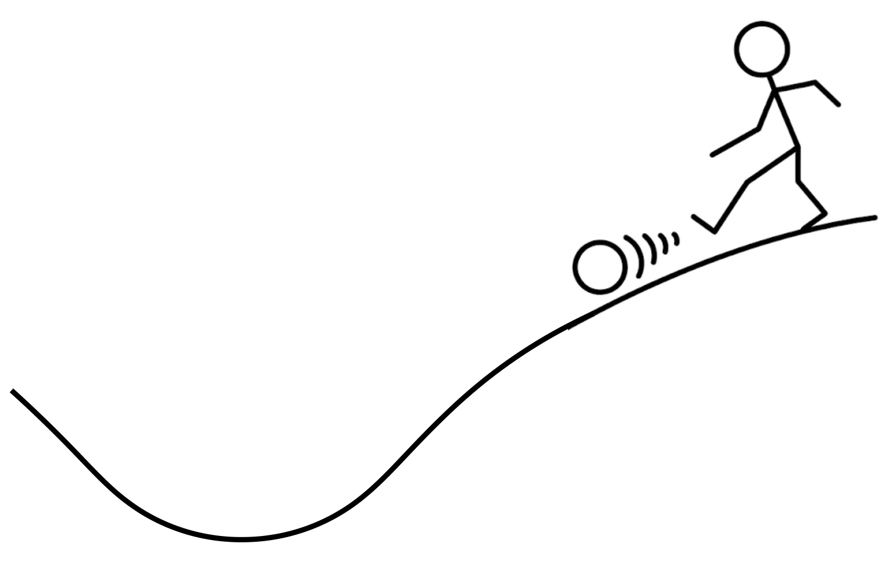
most of the time, the ball ends up at the bottom of a hill
A ball moving around the \(-\log(\mathbb{P}(\text{data} \mid \theta) \mathbb{P}(\theta))\) landscape according to the laws of physics is basically Hamiltonian MC
No-U-Turns just makes HMC more computationally efficient
Here is a landscape with two parameters
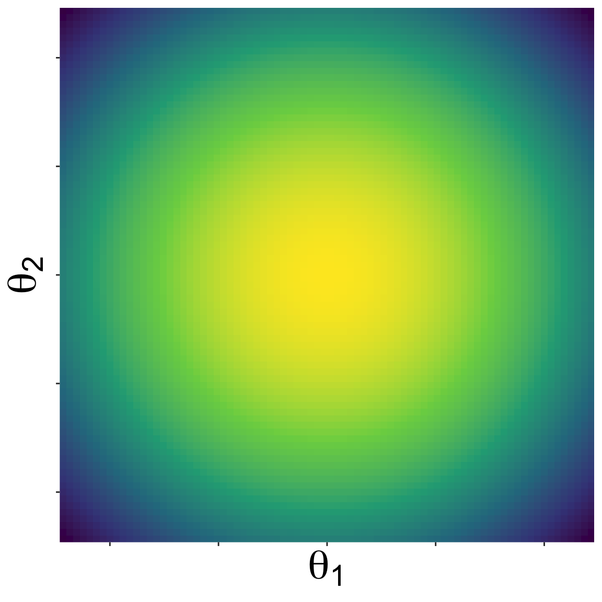
Starting from some initial location, NUTS proposes new parameter values by kicking a ball and seeing where it rolls on the landscape
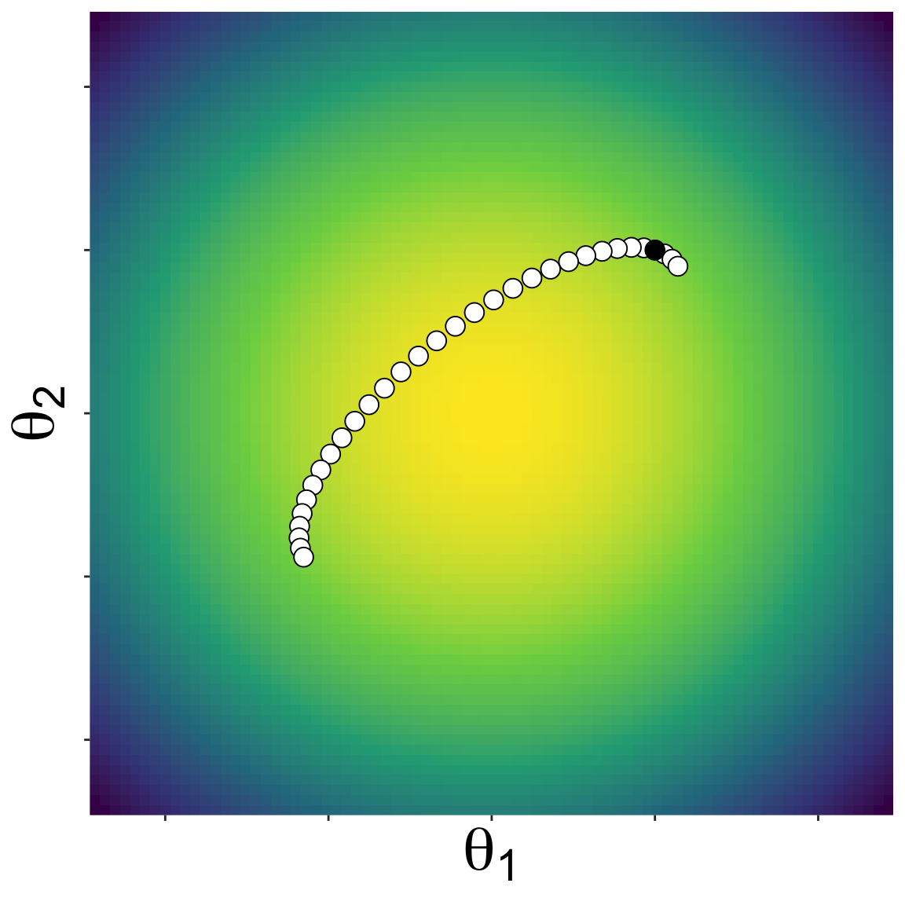
A new set of parameter values along the path of the ball is randomly choosen, and the algorithm repeated
Eventually a sample of the posterior emerges
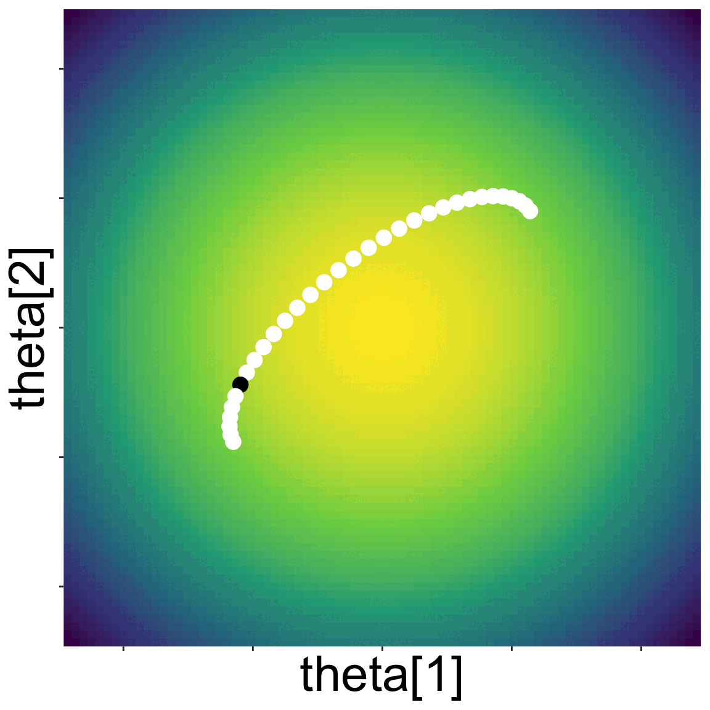
Despite the complexities of how this works under the hood, brms will make it feel familiar
Despite the complexities of how this works under the hood, brms will make it feel familiar
Estimate Est.Error Q2.5 Q97.5
Intercept -2.379676 0.3075657 -2.993868 -1.784806
x 4.464150 0.3727007 3.750129 5.189482We’ll get deep into this in the labs!